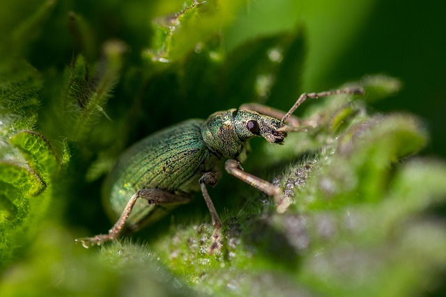

Pertanian Organik Sukamaju
25 AGUSTUS 2024
Para petani di Kabupaten Sukamaju mulai beralih ke metode pertanian organik sebagai upaya meningkatkan
kesejahteraan dan keberlanjutan lingkungan..

Inovasi Teknologi Mempercepat Revolusi Pertanian di Indonesia
17 AGUSTUS 2024
Dalam upaya meningkatkan produktivitas dan keberlanjutan sektor pertanian, Indonesia sedang mengalami
revolusi teknologi yang signifikan..

Teknologi Canggih Revolusi Pertanian
27 AGUSTUS 2024
Dunia pertanian Indonesia mengalami transformasi signifikan dengan hadirnya teknologi penanaman
otomatis terbaru yang diperkenalkan oleh PT AgroTech Nusantara. Inovasi ini diharapkan dapat
meningkatkan produktivitas pertanian secara drastis dan mengurangi ketergantungan pada tenaga kerja
manual..

Inovasi Pengendalian Hama Dengan Cara Ramah Lingkungan
28 AGUSTUS 2024
Para petani di berbagai wilayah di Indonesia kini semakin aktif menggunakan metode pengendalian hama
yang ramah lingkungan untuk melindungi tanaman mereka..